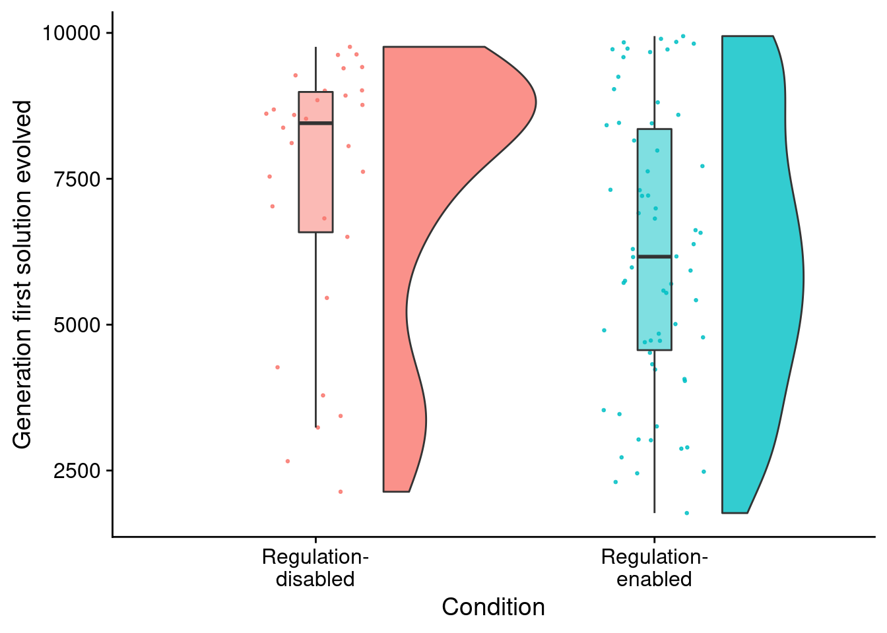
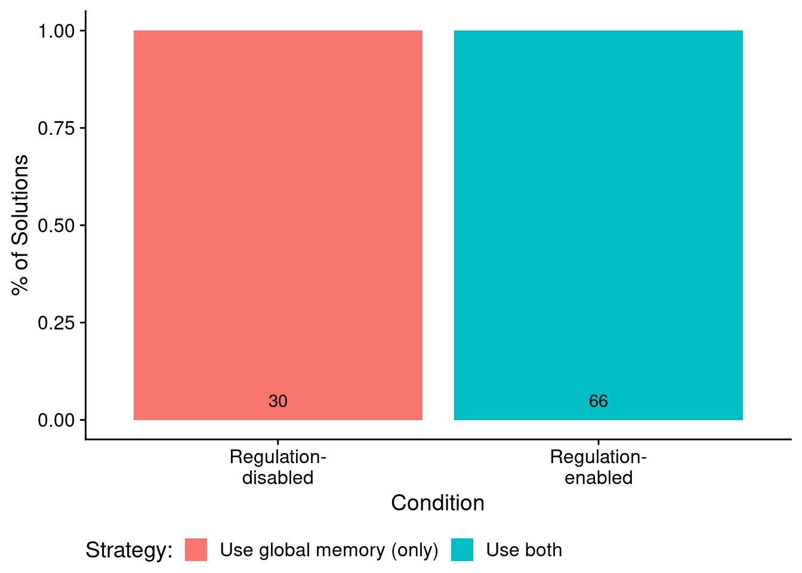
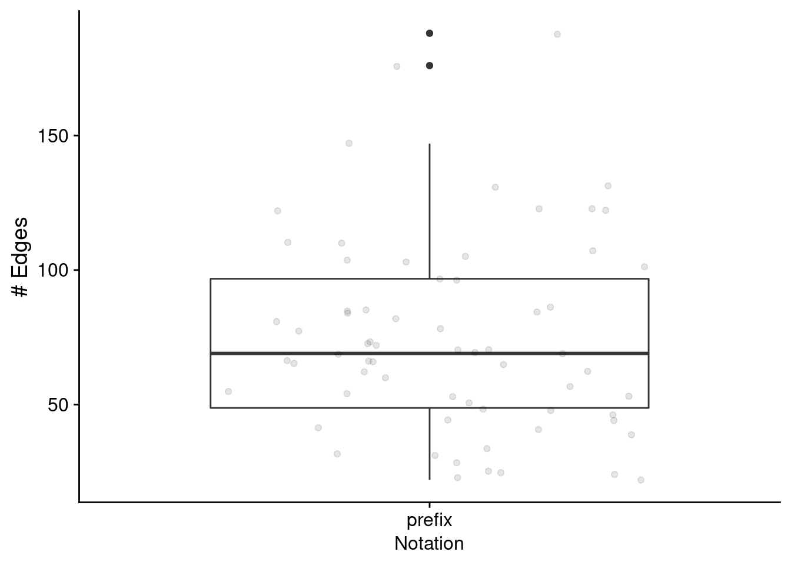
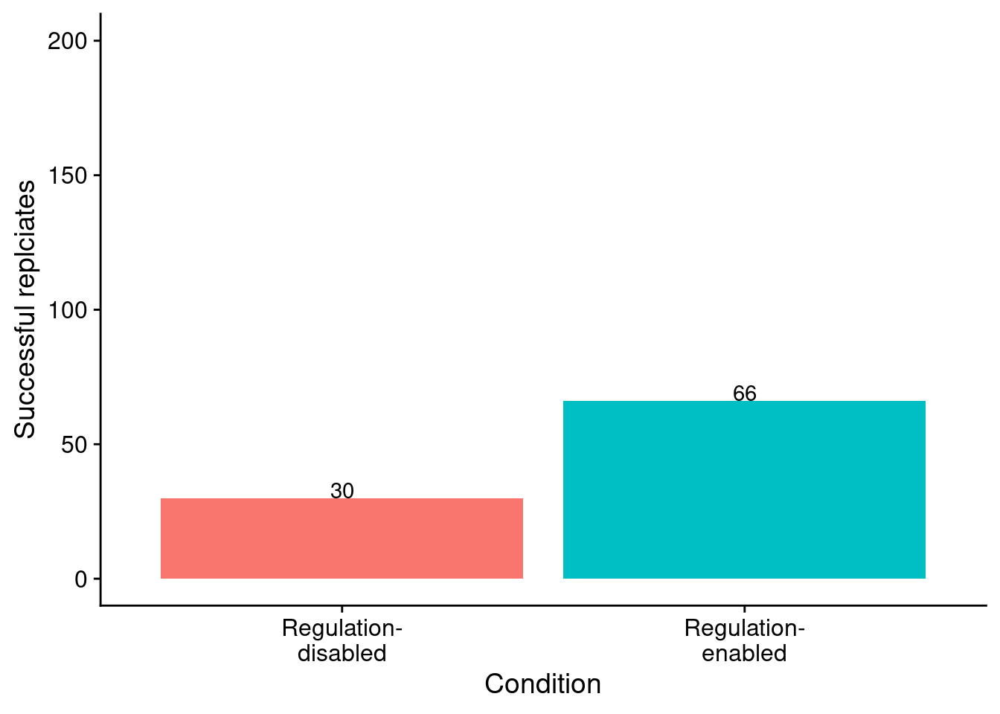
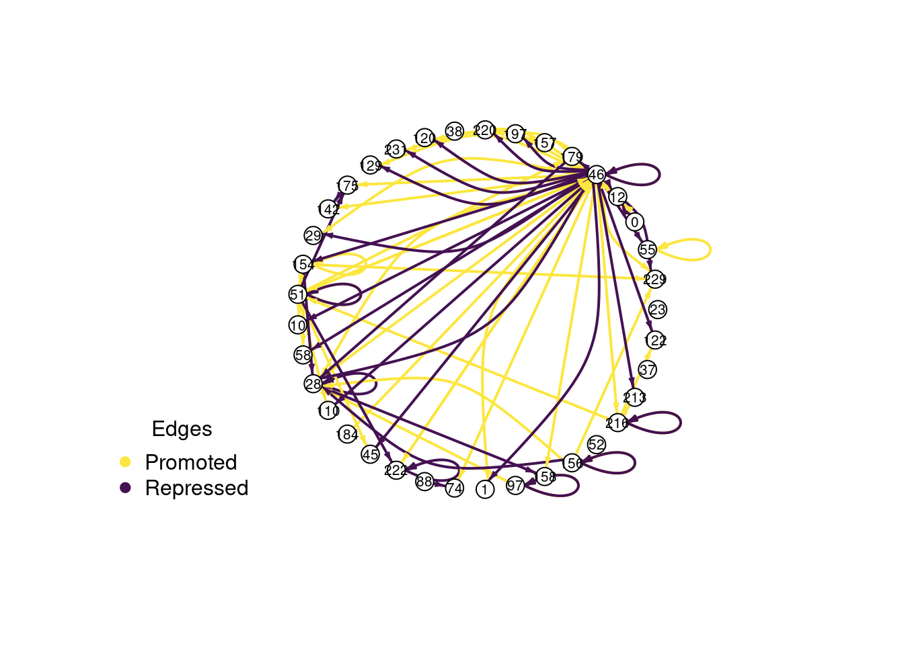
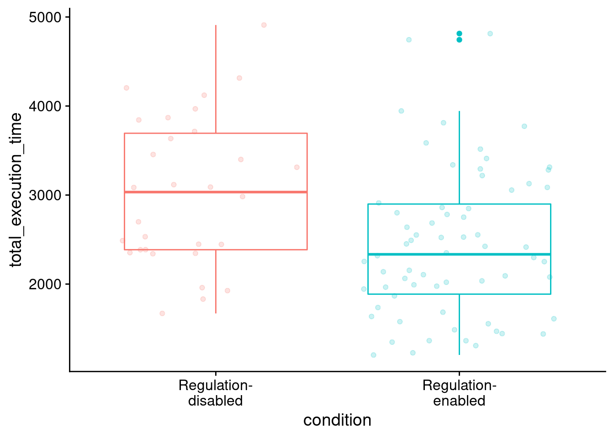
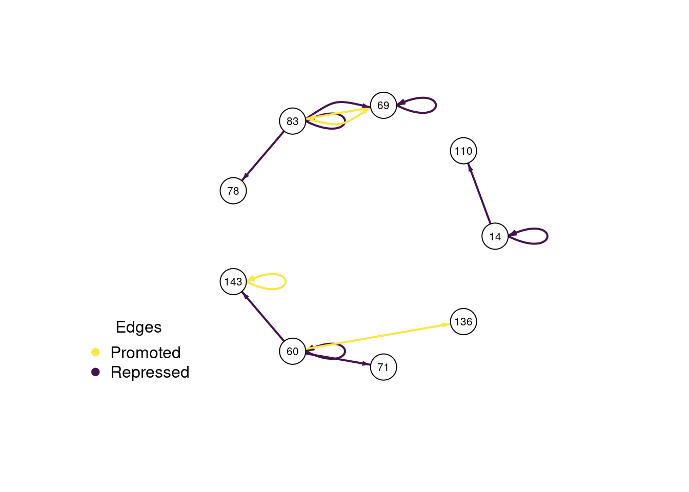

Chapter 8 Boolean calculator problem (prefix notation)
Here, we give an overview of the boolean-logic calculator problem, and we provide our data analyses for related experiments. All of our source code for statistical analyses and data visualizations is embedded in this document. The raw data can be found on the OSF project associated with this work (Lalejini, Moreno, and Ofria 2020).
Please file an issue or make a pull request on github to report any mistakes, ask questions, request more explanation, et cetera.
8.1 Overview
# Experimental parameters referenced in-text all in one convenient place.
time_steps <- 128
replicates <- 200
population_size <- 1000
generations <- 10000
# Settings for statistical analyses.
alpha <- 0.05
# Relative location of data.
working_directory <- "experiments/2020-11-28-bool-calc-prefix/analysis/" # << For bookdown
# working_directory <- "./" # << For local analysisThe Boolean-logic calculator problem requires programs to implement a calculator capable of performing each of the following 10 bitwise logic operations: ECHO, NOT, NAND, AND, OR-NOT, OR, AND-NOT, NOR, XOR, and EQUALS. In this problem, there are 11 distinct types of input signals: one for each of the 10 possible operators and one for numeric inputs. Each distinct signal type is associated with a unique tag and is meant to represent different types of buttons that could be pressed on a physical calculator. Programs receive a sequence of input signals in prefix notation, receiving an operator signal followed by the appropriate number of numeric input signals (that each contain an operand to use in the computation). After receiving the requisite input signals, programs must output the correct result of the requested computation.
8.2 Analysis Dependencies
Load all required R libraries.
library(ggplot2)
library(tidyverse)
library(cowplot)
library(viridis)
library(reshape2)
library(igraph)
source("https://gist.githubusercontent.com/benmarwick/2a1bb0133ff568cbe28d/raw/fb53bd97121f7f9ce947837ef1a4c65a73bffb3f/geom_flat_violin.R")These analyses were conducted in the following computing environment:
print(version)## _
## platform x86_64-pc-linux-gnu
## arch x86_64
## os linux-gnu
## system x86_64, linux-gnu
## status
## major 4
## minor 0.2
## year 2020
## month 06
## day 22
## svn rev 78730
## language R
## version.string R version 4.0.2 (2020-06-22)
## nickname Taking Off Again8.3 Setup
Load data, initial data cleanup, configure some global settings.
data_loc <- paste0(working_directory, "data/max_fit_orgs.csv")
data <- read.csv(data_loc, na.strings="NONE")
# Specify factors (not all of these matter for this set of runs).
data$matchbin_thresh <- factor(
data$matchbin_thresh,
levels=c(0, 25, 50, 75)
)
data$TAG_LEN <- factor(
data$TAG_LEN,
levels=c(32, 64, 128, 256)
)
data$notation <- factor(
data$notation,
levels=c("prefix", "postfix")
)
# Define function to summarize regulation/memory configurations.
get_con <- function(reg, mem) {
if (reg == "0" && mem == "0") {
return("none")
} else if (reg == "0" && mem=="1") {
return("memory")
} else if (reg=="1" && mem=="0") {
return("regulation")
} else if (reg=="1" && mem=="1") {
return("both")
} else {
return("UNKNOWN")
}
}
# Specify experimental condition for each datum.
data$condition <- mapply(
get_con,
data$USE_FUNC_REGULATION,
data$USE_GLOBAL_MEMORY
)
data$condition <- factor(
data$condition,
levels=c("regulation", "memory", "none", "both")
)
# Given knockout info, what strategy does a program use?
get_strategy <- function(use_reg, use_mem) {
if (use_reg=="0" && use_mem=="0") {
return("use neither")
} else if (use_reg=="0" && use_mem=="1") {
return("use memory")
} else if (use_reg=="1" && use_mem=="0") {
return("use regulation")
} else if (use_reg=="1" && use_mem=="1") {
return("use both")
} else {
return("UNKNOWN")
}
}
# Specify experimental conditions (to make labeling easier).
data$strategy <- mapply(
get_strategy,
data$relies_on_regulation,
data$relies_on_global_memory
)
data$strategy <- factor(
data$strategy,
levels=c(
"use regulation",
"use memory",
"use neither",
"use both"
)
)
# Filter data to include only replicates labeled as solutions
sol_data <- filter(data, solution=="1")
####### Load instruction execution data #######
inst_exec_data <- read.csv(paste0(working_directory, "data/exec_trace_summary.csv"), na.strings="NA")
inst_exec_data$condition <- mapply(
get_con,
inst_exec_data$USE_FUNC_REGULATION,
inst_exec_data$USE_GLOBAL_MEMORY
)
inst_exec_data$condition <- factor(
inst_exec_data$condition,
levels=c("regulation", "memory", "none", "both")
)
inst_exec_data$notation <- factor(
inst_exec_data$notation,
levels=c("prefix", "postfix")
)
####### Load network data #######
reg_network_data <- read.csv(paste0(working_directory, "data/reg_graphs_summary.csv"), na.strings="NA")
reg_network_data <- filter(reg_network_data, run_id %in% data$SEED)
get_notation <- function(seed) {
return(filter(data, SEED==seed)$notation)
}
reg_network_data$notation <- mapply(
get_notation,
reg_network_data$run_id
)
reg_network_data$notation <- factor(
reg_network_data$notation,
levels=c("prefix", "postfix")
)
####### misc #######
# Configure our default graphing theme
theme_set(theme_cowplot())8.4 Problem-solving success
The number of successful replicates by condition:
# Graph the number of solutions evolved in each condition, faceted by environmental complexity
ggplot(sol_data, aes(x=condition, fill=condition)) +
geom_bar() +
geom_text(
stat="count",
mapping=aes(label=..count..),
position=position_dodge(0.9),
vjust=0
) +
scale_x_discrete(
name="Condition",
breaks=c("memory","both"),
labels=c("Regulation-\ndisabled", "Regulation-\nenabled")
) +
ylab("Successful replciates") +
ylim(0, 200) +
theme(legend.position = "none") +
ggsave(
paste0(working_directory, "imgs/boolean-calc-prefix-solution-counts.pdf"),
width=4,
height=4
)Test for significance using Fisher’s exact test.
# Extract successes/fails for each condition.
reg_disabled_success_cnt <- nrow(filter(sol_data, solution=="1" & condition=="memory"))
reg_disabled_fail_cnt <- replicates - reg_disabled_success_cnt
reg_enabled_success_cnt <- nrow(filter(sol_data, solution=="1" & condition=="both"))
reg_enabled_fail_cnt <- replicates - reg_enabled_success_cnt
# Regulation-disabled vs regulation-enabled
perf_table <- matrix(
c(
reg_enabled_success_cnt,
reg_disabled_success_cnt,
reg_enabled_fail_cnt,
reg_disabled_fail_cnt
),
nrow=2
)
rownames(perf_table) <- c("reg-enabled", "reg-disabled")
colnames(perf_table) <- c("success", "fail")
print(perf_table)## success fail
## reg-enabled 66 134
## reg-disabled 30 170print(fisher.test(perf_table))##
## Fisher's Exact Test for Count Data
##
## data: perf_table
## p-value = 3.585e-05
## alternative hypothesis: true odds ratio is not equal to 1
## 95 percent confidence interval:
## 1.673731 4.711896
## sample estimates:
## odds ratio
## 2.7838528.5 How many generations elapse before solutions evolve?
unfinished_data <- filter(data, solution=="0")
unfinished_data$graph_update <- 12500
ggplot( ) +
geom_flat_violin(
data = sol_data,
mapping = aes(x=condition, y=update, fill=condition),
position = position_nudge(x = .2, y = 0),
alpha = .8
) +
geom_point(
data = sol_data,
aes(x=condition, y=update, color=condition),
position = position_jitter(width = .15),
size = .5,
alpha = 0.8
) +
geom_point(
data = unfinished_data,
mapping=aes(x=condition, y=graph_update),
color="gray",
position = position_jitter(width = .15, height=500),
size = .5,
alpha = 0.8
) +
geom_boxplot(
data = sol_data,
mapping = aes(x=condition, y=update, fill=condition),
width = .1,
outlier.shape = NA,
alpha = 0.5
) +
scale_x_discrete(
name="Condition",
breaks=c("memory", "both"),
labels=c("Regulation-\ndisabled", "Regulation-\nenabled")
) +
scale_y_continuous(
name="Generation first solution evolved",
limits=c(0, 13000),
breaks=c(0, 2500, 5000, 7500, 10000, 12500),
labels=c("0", "2500", "5000", "7500", "10000", "Unsolved")
) +
# coord_flip() +
guides(fill = FALSE) +
guides(color = FALSE) +
ggsave(
paste0(working_directory, "imgs/boolean-calc-prefix-solve-time-cloud.pdf"),
width=4,
height=4
)
Test for statistical difference between conditions using a Wilcoxon rank sum test.
print(wilcox.test(formula=update~condition, data=sol_data, exact=FALSE, conf.int=TRUE))##
## Wilcoxon rank sum test with continuity correction
##
## data: update by condition
## W = 1249, p-value = 0.04102
## alternative hypothesis: true location shift is not equal to 0
## 95 percent confidence interval:
## 45.00003 2448.99997
## sample estimates:
## difference in location
## 1291.2658.6 Evolved strategies
8.6.1 What mechanisms do programs rely on to adjust responses to signals over time?
We used indpendent knockouts of tag-based genetic regulation and global memory buffer access to investigate the mechanisms underpinning successful programs.
ggplot( sol_data, mapping=aes(x=condition, fill=strategy) ) +
geom_bar(
position="fill",
stat="count"
) +
geom_text(
stat='count',
mapping=aes(label=..count..),
position=position_fill(vjust=0.05)
) +
ylab("% of Solutions") +
scale_fill_discrete(
name="Strategy:",
breaks=c(
"use regulation",
"use memory",
"use neither",
"use both"
),
labels=c(
"Use regulation (only)",
"Use global memory (only)",
"Use neither",
"Use both"
)
) +
scale_x_discrete(
name="Condition",
breaks=c("memory", "both"),
labels=c("Regulation-\ndisabled", "Regulation-\nenabled")
) +
theme(legend.position = "bottom")
8.6.2 Gene regulatory networks
Looking only at successful programs that rely on regulation. At a glance, what do gene regulatory networks look like?
First, the total edges found in networks:
relies_on_reg <- filter(
sol_data,
relies_on_regulation=="1"
)$SEED
ggplot( filter(reg_network_data, run_id %in% relies_on_reg), aes(x=notation, y=edge_cnt) ) +
geom_boxplot() +
geom_jitter(alpha=0.1) +
xlab("Notation") +
ylab("# Edges") +
theme(
legend.position="bottom",
legend.text=element_text(size=9),
legend.title=element_text(size=10),
axis.title.x=element_text(size=12)
) +
ggsave(
paste0(working_directory, "imgs/boolean-calc-prefix-regulation-edges.png"),
width=4,
height=3
)
Next, let’s look at edges by type.
# Process/cleanup the network data
melted_network_data <- melt(
filter(reg_network_data,
run_id %in% relies_on_reg
),
variable.name = "reg_edge_type",
value.name = "reg_edges_cnt",
measure.vars=c("repressed_edges_cnt", "promoted_edges_cnt")
)
ggplot( melted_network_data, aes(x=reg_edge_type, y=reg_edges_cnt, color=reg_edge_type) ) +
geom_boxplot() +
geom_jitter(alpha=0.2) +
xlab("Environmental Complexity") +
ylab("# Edges") +
scale_x_discrete(
name="Edge type",
limits=c("repressed_edges_cnt", "promoted_edges_cnt"),
labels=c("Repressing edges", "Promoting edges")
) +
theme(
legend.position="none",
legend.text=element_text(size=9),
legend.title=element_text(size=10),
axis.title.x=element_text(size=12)
) +
ggsave(
paste0(working_directory, "imgs/boolean-calc-prefix-regulation-edge-types.png"),
width=4,
height=3
)Test for a statistical difference between edge types using a wilcoxon rank sum test:
print(
paste0(
"Median # repressed edges: ",
median(filter(melted_network_data, reg_edge_type=="repressed_edges_cnt")$reg_edges_cnt)
)
)## [1] "Median # repressed edges: 33"print(
paste0(
"Median # promoting edges: ",
median(filter(melted_network_data, reg_edge_type=="promoted_edges_cnt")$reg_edges_cnt)
)
)## [1] "Median # promoting edges: 36"print(wilcox.test(formula=reg_edges_cnt ~ reg_edge_type, data=melted_network_data, exact=FALSE, conf.int=TRUE))##
## Wilcoxon rank sum test with continuity correction
##
## data: reg_edges_cnt by reg_edge_type
## W = 1950.5, p-value = 0.3014
## alternative hypothesis: true location shift is not equal to 0
## 95 percent confidence interval:
## -8.999949 2.999926
## sample estimates:
## difference in location
## -2.9999638.6.3 Program instruction execution traces
8.6.3.1 Execution time
How many time steps do successful programs take to solve the boolean calculator problem?
# only want solutions
solutions_inst_exec_data <- filter(inst_exec_data, SEED %in% sol_data$SEED)
ggplot( solutions_inst_exec_data, aes(x=condition, y=total_execution_time, color=condition) ) +
geom_boxplot() +
geom_jitter(alpha=0.2) +
scale_x_discrete(
breaks=c("memory", "both"),
labels=c("Regulation-\ndisabled", "Regulation-\nenabled")
) +
theme(
legend.position="none"
)
Test for significant difference between conditions using Wilcoxon rank sum test:
print(
wilcox.test(
formula=total_execution_time~condition,
data=filter(solutions_inst_exec_data),
exact=FALSE,
conf.int=TRUE)
)##
## Wilcoxon rank sum test with continuity correction
##
## data: total_execution_time by condition
## W = 1374, p-value = 0.002434
## alternative hypothesis: true location shift is not equal to 0
## 95 percent confidence interval:
## 240 986
## sample estimates:
## difference in location
## 587.07748.6.3.2 What types of instructions to successful programs execute?
Here, we look at the distribution of instruction types executed by successful programs. We’re primarily interested in the proportion of control flow instructions, so let’s look at that first.
ggplot( solutions_inst_exec_data, aes(x=condition, y=control_flow_inst_prop, color=condition) ) +
geom_boxplot() +
geom_jitter(alpha=0.2) +
scale_x_discrete(
breaks=c("memory", "both"),
labels=c("Regulation-\ndisabled", "Regulation-\nenabled")
) +
ylab("Proportion of executed flow control instructions") +
theme(
legend.position="bottom",
axis.title.x=element_blank()
)Test for significant difference between conditions using a Wilcoxon rank sum test:
print(
wilcox.test(
formula=control_flow_inst_prop~condition,
data=filter(solutions_inst_exec_data),
exact=FALSE,
conf.int=TRUE)
)##
## Wilcoxon rank sum test with continuity correction
##
## data: control_flow_inst_prop by condition
## W = 1541.5, p-value = 1.328e-05
## alternative hypothesis: true location shift is not equal to 0
## 95 percent confidence interval:
## 0.01486019 0.03910795
## sample estimates:
## difference in location
## 0.02639857In case you’re curious, here’s all categories of instructions:
melted <- melt(
solutions_inst_exec_data,
variable.name = "inst_type",
value.name = "inst_type_prop",
measure.vars=c(
"math_inst_prop",
"module_inst_prop",
"memory_inst_prop",
"regulation_inst_prop",
"control_flow_inst_prop",
"thread_inst_prop",
"task_inst_prop",
"nop_inst_prop"
)
)
ggplot( melted, aes(x=inst_type, y=inst_type_prop, color=condition) ) +
geom_boxplot() +
scale_color_discrete(
name="Condition:",
breaks=c("memory", "both"),
labels=c("Regulation-disabled", "Regulation-enabled")
) +
xlab("Instruction type") +
ylab("Proportion of instructions in execution trace") +
coord_flip() +
theme(legend.position="bottom")8.7 Visualizaing an evolved regulatory network
Let’s take a closer look at a successful gene regulatory network.
# 24386-393 24391-394 24392-394 24393 24398 24400
trace_id <- 24400
test_id <- 420Specifically, we’ll be looking at the solution evolved in run id 2.44^{4} (arbitrarily selected).
8.7.1 Data wrangling
case_study_info <- read.csv(
paste0(working_directory, "data/max_fit_orgs.csv"),
na.strings="NONE"
)
case_study_info <- filter(
case_study_info,
SEED==trace_id
)
# Extract relevant information about solution of interest.
is_sol <- case_study_info$solution
num_modules <- case_study_info$num_modules
# Load trace file associated with this solution.
trace_file <- paste0(working_directory, "data/reg-traces/trace-reg_update-10000_run-id-", trace_id, ".csv")
trace_data <- read.csv(trace_file, na.strings="NONE")
trace_data <- filter(trace_data, cur_test_id == test_id)
# Data cleanup/summarizing
trace_data$is_running <- trace_data$is_running == "1" | trace_data$is_triggered == "1" | trace_data$is_cur_responding_function == "1"
# Build a list of modules that were triggered & those that responded to a signal
triggered_ids <- levels(factor(filter(trace_data, is_triggered=="1")$module_id))
response_ids <- levels(factor(filter(trace_data, is_cur_responding_function=="1")$module_id))
regulated_ids <- levels(factor(filter(trace_data, regulator_state != 0)$module_id))
final_response_ids <- levels(factor(filter(trace_data, is_cur_responding_function=="1" & cur_response_type == "NUMERIC")$module_id))
trace_data$is_ever_active <-
trace_data$is_ever_active=="1" |
trace_data$is_running |
trace_data$module_id %in% triggered_ids |
trace_data$module_id %in% response_ids |
trace_data$module_id %in% regulated_ids
# function to categorize each regulatory state as promoted, neutral, or repressed
# remember, the regulatory states in our data file operate with tag DISTANCE in mind
# as opposed to tag similarity, so: promotion => reg < 0, repression => reg > 0
categorize_reg_state <- function(reg_state) {
if (reg_state == 0) {
return("neutral")
} else if (reg_state < 0) {
return("promoted")
} else if (reg_state > 0) {
return("repressed")
} else {
return("unknown")
}
}
trace_data$regulator_state_simplified <- mapply(
categorize_reg_state,
trace_data$regulator_state
)
# Omit all in-active rows
# Extract only rows that correspond with modules that were active during evaluation.
active_data <- filter(trace_data, is_ever_active==TRUE)
# Do some work to have module ids appear in a nice order along axis.
active_module_ids <- levels(factor(active_data$module_id))
active_module_ids <- as.integer(active_module_ids)
module_id_map <- as.data.frame(active_module_ids)
module_id_map$order <- order(module_id_map$active_module_ids) - 1
get_module_x_pos <- function(module_id) {
return(filter(module_id_map, active_module_ids==module_id)$order)
}
active_data$mod_id_x_pos <- mapply(get_module_x_pos, active_data$module_id)8.7.2 Function regulation over time
First, let’s omit all non-active funcitons.
Horizontal orientation:
out_name <- paste0(
working_directory,
"imgs/case-study-trace-id-",
trace_id,
"-test_id-",
test_id,
"-regulator-state-horizontal.pdf"
)
active_data$module_id <- factor(active_data$module_id)
active_data$graph_time_step <- active_data$time_step - min(active_data$time_step)
ggplot(active_data, aes(x=mod_id_x_pos, y=graph_time_step, fill=regulator_state_simplified)) +
scale_fill_viridis(
name="Regulation:",
limits=c(
"promoted",
"neutral",
"repressed"
),
labels=c(
"Promoted",
"Neutral",
"Repressed"
),
discrete=TRUE,
direction=-1
) +
scale_x_discrete(
name="Function ID",
limits=seq(0, length(active_module_ids)-1, 1),
labels=active_module_ids
) +
ylab("Time Step") +
# Background tile color
geom_tile(
color="white",
size=0.2,
width=1,
height=1,
alpha=0.75
) +
# Highlight actively running functions
geom_tile(
data=filter(active_data, is_running==TRUE | is_triggered=="1"),
color="black",
size=0.8,
width=1,
height=1
) +
# Environment delimiters
geom_hline(
yintercept=filter(active_data, cpu_step==0)$graph_time_step - 0.5,
size=1.25,
color="black"
) +
# Draw points on triggered modules
geom_point(
data=filter(active_data, is_triggered=="1"),
shape=23,
colour="black",
fill="white",
stroke=0.5,
size=1.75,
position=position_nudge(x = 0, y = 0.01)
) +
geom_point(
data=filter(active_data, is_cur_responding_function=="1"),
shape=21,
colour="black",
fill="white",
stroke=0.5,
size=1.5,
position=position_nudge(x = 0, y = 0.01)
) +
theme(
legend.position = "top",
legend.text = element_text(size=10),
legend.title=element_text(size=10),
axis.text.y = element_text(size=10),
axis.title.y = element_text(size=10),
axis.text.x = element_text(size=9),
axis.title.x = element_text(size=10),
plot.title = element_text(hjust = 0.5)
) +
coord_flip() +
ggsave(out_name, height=4, width=8)## Warning: Continuous limits supplied to discrete scale.
## Did you mean `limits = factor(...)` or `scale_*_continuous()`?
Vertical orientation:
out_name <- paste0(
working_directory,
"imgs/case-study-trace-id-",
trace_id,
"-test_id-",
test_id,
"-regulator-state-vertical.pdf"
)
ggplot(
active_data,
aes(x=mod_id_x_pos, y=time_step, fill=regulator_state_simplified)
) +
scale_fill_viridis(
name="Regulation:",
limits=c(
"promoted",
"neutral",
"repressed"
),
labels=c(
"+",
"\u00F8",
"-"
),
discrete=TRUE,
direction=-1
) +
scale_x_discrete(
name="Function ID",
limits=seq(0, length(active_module_ids)-1, 1),
labels=active_module_ids
) +
# scale_y_discrete(
# name="Time Step"
# ) +
# Background tile color
geom_tile(
color="white",
size=0.2,
width=1,
height=1,
alpha=0.75
) +
# Highlight actively running functions
geom_tile(
data=filter(active_data, is_running==TRUE | is_triggered=="1"),
color="black",
size=0.8,
width=1,
height=1
) +
# Environment delimiters
geom_hline(
yintercept=filter(active_data, cpu_step==0)$time_step - 0.5,
size=1.25,
color="black"
) +
# Draw points on triggered modules
geom_point(
data=filter(active_data, is_triggered=="1"),
shape=23,
colour="black",
fill="white",
stroke=0.5,
size=1.5,
position=position_nudge(x = 0, y = 0.01)
) +
geom_point(
data=filter(active_data, is_cur_responding_function=="1"),
shape=21,
colour="black",
fill="white",
stroke=0.5,
size=1.5,
position=position_nudge(x = 0, y = 0.01)
) +
theme(
legend.position = "top",
legend.text = element_text(size=9),
legend.title=element_text(size=8),
axis.text.y = element_text(size=8),
axis.title.y = element_text(size=8),
axis.text.x = element_text(size=8),
axis.title.x = element_text(size=8),
plot.title = element_text(hjust = 0.5)
) +
ggsave(
out_name,
height=3.5,
width=2.25
)## Warning: Continuous limits supplied to discrete scale.
## Did you mean `limits = factor(...)` or `scale_*_continuous()`?
8.7.3 Evolved regulatory network
We use the igraph package to draw this program’s gene regulatory network.
# Networks!
graph_nodes_loc <- paste0(working_directory, "data/igraphs/reg_graph_id-", trace_id, "_test-", test_id , "_nodes.csv")
graph_edges_loc <- paste0(working_directory, "data/igraphs/reg_graph_id-", trace_id, "_test-", test_id , "_edges.csv")
graph_nodes_data <- read.csv(graph_nodes_loc, na.strings="NONE")
graph_edges_data <- read.csv(graph_edges_loc, na.strings="NONE")
network <- graph_from_data_frame(
d=graph_edges_data,
vertices=graph_nodes_data,
directed=TRUE
)
# Setup edge styling
E(network)$color[E(network)$type == "promote"] <- "#FCE640"
E(network)$lty[E(network)$type == "promote"] <- 1
E(network)$color[E(network)$type == "repress"] <- "#441152"
E(network)$lty[E(network)$type == "repress"] <- 1
network_out_name <- paste0(working_directory, "imgs/case-study-id-", trace_id, "-test-", test_id, "-network.svg")
draw_network <- function(net, write_out, out_name) {
if (write_out) {
svg(out_name, width=6,height=3)
# bottom, left, top, right
par(mar=c(0.2,0,1,0.5))
}
plot(
net,
edge.arrow.size=0.4,
edge.arrow.width=0.75,
edge.width=2,
vertex.size=20,
vertex.label.cex=0.65,
curved=TRUE,
vertex.color="grey99",
vertex.label.color="black",
vertex.label.family="sans",
layout=layout.circle(net)
)
legend(
x = "bottomleft", ## position, also takes x,y coordinates
legend = c("Promoted", "Repressed"),
pch = 19, ## legend symbols see ?points
col = c("#FCE640", "#441152"),
bty = "n",
border="black",
xpd=TRUE,
title = "Edges"
)
if (write_out) {
dev.flush()
dev.off()
}
}
draw_network(network, TRUE, network_out_name)## png
## 2draw_network(network, FALSE, "")
References
Lalejini, Alexander M, Matthew A Moreno, and Charles Ofria. 2020. “Tag-Based Genetic Regulation for Genetic Programming.” OSF. https://doi.org/10.17605/OSF.IO/928FX.